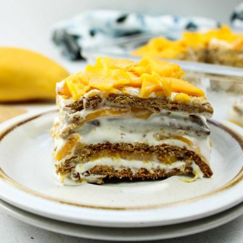

Mango Float Recipe
Description:
Mango float is a popular no-bake Filipino dessert made with layers of ripe mangoes, graham crackers, and sweetened cream. It is commonly served chilled and is known for its light and creamy texture.
This dessert is easy to prepare and does not require an oven, which makes it perfect for gatherings and special occasions. The sweetness of the mangoes balances well with the cream, creating a simple but satisfying treat.
Ingredients:
- 1 tablespoon of crushed graham
- 20 pieces Graham crackers
- 1 cup all purpose cream or coolwhip
- 3/4 cup condensed milk
- 2 cups of mangoes thinly sliced
Steps:
- In a rectangular dish, arrange 8 to 10 pieces of graham crackers. Set aside.
- In a bowl, combine the cream/cool whip and condensed milk. (Mix well)
- Then on the layered crackers on the bottom, spread the milk and cream mixture.
- Then spread out the thin sliced mangoes evenly on top of the cream.
- Make another layer of graham crackers; spread the cream and mango slices. (You can do lots of layers if you want)
- Garnish top layer with mango and sprinkle the crushed graham.
- Chill for at least 3 hours before serving.
Credits:
- Recipe adapted from panlasangpinoy.com
- Image from maeservesyoufood.com